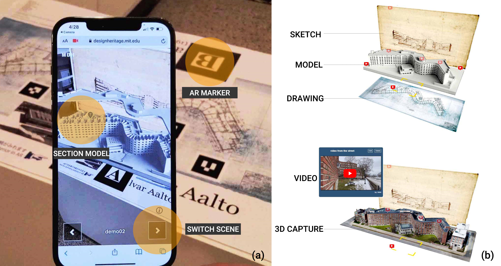
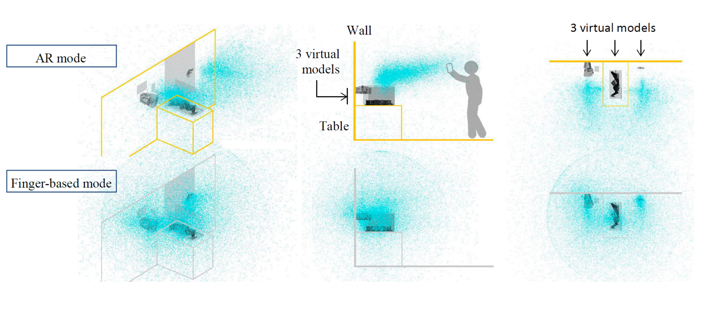
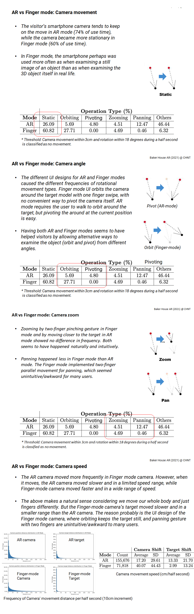

Design Heritage XR
The Design Heritage Platform is a collaborative online gallery and XR tool for collecting, sharing, and curating 3D captures of Heritage places and spatial designs.
-
Role
XR Developer
Front-End Developer
UIUX Designer
- Director Takehiko Nagakura
- Team Wenzhe Peng (Developer Leader)
STUDY 1: A MOBILE WEBAR EXHIBITION
The MIT Design Heritage WebAR program was developed for the Baker House exhibit through
a collaboration between MIT, the Aalto Foundation in Helsinki, and Gallery A4 in Tokyo.
The program was put into practice in Tokyo Setagaya Museum(2021.03) and Kobe Prefectural Museum of Art(2021.07). The study
presents how these artifacts can be curated through an augmented reality (AR) exhibit using visitors’ smartphones, and evaluates usage
logs collected as the visitors on the museum floor interact with the web application.
Test demo with Mobile: Recommended to use Chrome/Safari and iPhones 11/12 or Android devices with 6GB or more RAM. Please charge your smartphone battery above 30%. Other devices may work but without stability.
01 | Upload Multi-Media Resources
MIT Design Heritage Platorm allows users to upload and manage multimedia content including 3D mesh models with
textures (i.e.,obj, glTF), images(i.e.,jpg, png, gif), and videos to a project archive.
For development, several 3D scan models, CAD models, and on-site video recordings produced by the MIT team as well as a few hundred scanned, archival drawings and photos provided by Aalto Foundation were initially uploaded onto the site

Figure 1: Multi-Media Assets library

Figure 2: Textured Models
02 | Construct narratives: scenes
Media components are spatially composed to curate various scenes that are switchable. Each component may take parts in different contexts

Figure 3: Scene construction and management on PC
Figure 4: Scene exhibition on mobile
03 | Interaction design
In AR-mode,
while the visitor moves around the exhibit with the handheld smartphone, the camera’s location relative to the physical markers embedded in the drawings exhibited on the floor causes synchronous
updating of the view of the 3D models. By touching the smartphone screen, the visitor can switch to
a non-AR “Finger-based mode”, and rotate, move, or magnify the camera to freely inspect the digital
models from any preferred vantage point. The data log can reconstruct the moving view through the
virtual camera in both these modes, with the identification of the detected AR markers used for
tracking
Figure 5: AR Mode and Finger Mode
04 | COVID-19 Restrictions and Opportunities
| COVID-19 Restrictions | Alternative Product Approaches |
|---|---|
| NO: Shared rental devices (and no cabled devices.) | Use personal mobile phone: No rental devices required. |
| NO: Apps requiring pre-loading or downloading from app stores. | Web app (Three.js + AR.js): No apps needs downloaded from the stores. |
| NO: Onsite control over installation/visitor assistance | Database-driven website: Dynamic updating of content for curators/designers |
| Must allow full remote collaboration for development | Database-driven website: Dynamic updating of content for curators/designers |
05 | Analytics: Data logging and reconstructing
The program collected device data and tracking log data(about user behaviors). The usage data of the web application initiated
by the visitors on the museum floor logs the camera pose, tracks AR markers, and the activations of UI switches with a half-second interval. The
camera pose (position and target) sampled relative to the binary markers, and logged
every half second sent back to Google Analytics data server.
Data visualization in 3D scene shows the reconstructed and continuous camera pose of users
06 | Findings
① AR Vs. Finger Mode
The way the digital model is placed in AR has a measurable impact on the spatial distribution of typical viewing angles from which the visitors observe the model (Fig 3). Not only do the walls, floor and table around the exhibit impose physical restrictions on the visitor’s position, but viewers are only comfortable holding and looking through the smartphones in certain body poses. In contrast, the Finger-based mode gives users more freedom in choosing viewing angles, while curators get less control over the way the model is observed
Figure 5: The distributions of the visitors’ camera positions around the exhibit: the distribution for AR-mode (top) and the one for Finger-based mode (bottom) shown in the axon (left), section (middle) and plan views (right). Two virtual models are placed on the physical wall, while one is set on the table.
① Visiting Session
Enriching contents by mixing virtual and physical exhibition media (3D models, 3D scans, videos, drawings), preparing multiple, user selectable scenes, and adding different interaction methods (AR mode and Finger-based mode) made the exhibit more engaging to the visitors as they seem to spend an additional amount of time to investigate them. Multiple scenes had a particularly pronounced impact in this exhibit.

Table 1. Statistics from the data logged (at half second intervals) during the first 20 days of the exhibition in Kobe Prefectural Museum from July 11 to July 31 of 2021. Logged visits of less than 5 seconds (about 5% of the total visitor counts) are included although these outliers indicate visitors just testing the application without actually using it. The comparison among the blue and red cells shows the increase of the total viewing time while the time spent on the first scene stays approximately the same. The comparison among the blue and yellow cells shows the increase of the total viewing time while the time spent on the 3D viewing stays approximately the same. The comparison among the blue and green cells shows the increase of the total viewing time while the time spent on viewing in AR mode stays approximately the same.
Video clips: 65% of the visitors watched videos (at least one of the 8 clips averaging 37 seconds long ranging from 9 to 97 seconds). Compared with people who did not watch any video, the total duration spent on the web app increased by about 40%, from 100 seconds to 142.
People watching videos also looked at the 3D models longer (6 %) possibly encouraged by watching the video.
Switch Scenes: The visitors stayed on the first scene for about 73 seconds, and about 50% of them tried the second and third scenes spending additional times.
The visitors spent less time on each of the second and third scenes than the first scene. This may indicate less successful designs of the second and third scenes, or the constraint by the duration in which each visitor felt comfortable monopolizing the exhibit when others lined up waiting for their turns.
AR Vs. Finger Mode: Majority (77%) of people tried Finger-based viewing. People who did not use Finger mode stayed on AR mode for about 90 seconds, while Finger mode users stayed on this web app for about 60% longer.
This increase of the total viewing time is mostly to examine the model in Finger mode in addition to observing the model in AR. (The time spent on AR mode was not much different in these two groups.)
07 | Future Studies
The log data collectable by this web app is a valuable resource for future studies to apply Machine Learning process.
For instance: